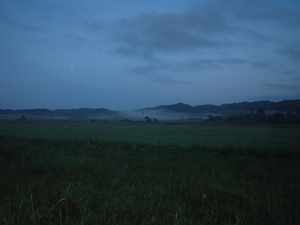

selem 
/sɔlɔm/
v_rt.
“early”
1.
n.
(maselem, mA1-) morning
Maselem pad ne eggipanew ad e kaaselem.
I'm leaving early tomorrow.
Eng. morning
Tag. umága
Ceb. buntag
Ilo.: bigát
Tigwanon: selem
Binukid: selem
WBM: selem
Obo: selem
Ilianen: selem
Dibabawon: seem
Sarangani: ʔiselem
Cagayano: sełem
Tagbawa: sellem
Proto: selem
OCM: Ordering of Time (805)
Online dict status: -
Usage level: B
v.
for the day (egmaselem, migmaselem, immaselem, theme, eg-mA1-) to be early in the morning
Eng. early in the morning
Online dict status: -
Usage level: F
adj.
(maselem-selem, mA1-rdpRT-) early in the morning
Eng. early morning; very early
Tag. umágang-umága
Ilo.: agsápa
OCM: Ordering of Time (805)
Online dict status: -
Usage level: F
2.
vi.
for a person or animal (egselem-selem, migselem-selem/inselem-selem, agent, eg><ø-rdpRT-) to be early
Egselem-selem key kaaselem ka eggipanew.
We'rè leaving early tomorrow.
Selem-selem kew ma kaaselem.
Be early tomorrow.
Eng. early
Tag. maága
Ceb. sayu
Ilo.: nasápa
OCM: Ordering of Time (805)
Online dict status: -
Usage level: F
n.
(kaseleman, kA><an-) morning
Sabekan kaseleman ne masalig amana ka migpanumbaley diyè te kanami.
One morning, lot of people visited our house.
Eng. morning
Online dict status: -
Usage level: M
adj.
(maselem-selem, mA1-rdpRT-) early in the morning. e.g., around 6:30 am
Maselem-selem pad ne migginguma key e diyè te Dabaw.
It was very early when we reach Davao.
Eng. early; 6:30 am
Online dict status: -
Usage level: B
3.
adj.
(kaaselem, kA-) tomorrow
Eng. tomorrow
Tag. bukas
Ceb. ugma
Online dict status: -
Usage level: B
Updated by: RJH,AAA,RJH,QDL
Last updated: 08/Mar/2014
"maselem" in text "Pegpanumbaley diye te baley"
"maselem" in text "Ke due masakit"
"maselem" in text "Due daruwan lukes ne nekegsinug-ung diye te dalan"
"maselem" in text "Due daruwan lukes ne nekegsinug-ung diye te dalan"
"maselem" in healthbook "Mania teg pakapatey kag iindes?"
"maselem" in healthbook "Miggendiye te huspital si Mirsi ka migtibi"
"maselem" in healthbook "Miggendiye te huspital si Mirsi ka migtibi"
"maselem" in healthbook "Miggendiye te huspital si Mirsi ka migtibi"
"maselem" in healthbook "Migderalu si Junjun te malariya"
"Maselem" in song "Egsalig a ki Hisus"
"maselem" in song "Kene ka lamu-lamu"
This page last updated: 28-Dec-2019
Copyright © 2009-2014, Matigsalug Language Christian Association, Inc